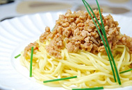

- 10月5日（月）〜
11月4日（水）
- 最終審査に残る作品を各部門5つ選出します。
計15作品となります。

- 最終審査員はユーザーのみなさんです。最も得票数が多かったレシピがグランプリとなります。

- 12月下旬にサイト上で発表します。


- ひき肉とニラのピリ辛パスタ☆台湾ラーメン風
- まゆカフェ
- 名古屋名物の台湾ラーメンをスパゲティでおしゃれにアレンジ♪
- 今年のグランプリはご当地料理のアレンジパスタ。パンチのあるソースが食欲をそそります。名古屋には「あんかけスパゲィ」という名物パスタもありますが、オリジナリティのある料理が生まれるお土地柄なのですね。ラーメンメニューでパスタをつくるアイディアは、いろいろアレンジできそうです。
![[賞品] 商品券3万円分、国内メーカーのパスタ1年分（20kg）](images/announce/announce_prize_01.jpg)
- 豆腐deなんちゃってカルボナーラ
- みっちゃん
- 高カロリーになりがちなカルボナーラを、豆腐を使ってヘルシーに作ってみました。
- カルボナーラはいつでも人気のパスタですが、生クリームを使うことも多く、高カロリーになりがちなのがやや難点。こちらのレシピは豆腐をベースにしているので、カロリーも抑えられたさっぱり味が魅力。白和えのようなやさしい風味です。練りごまや豆乳を加えてクリーミーに仕上げてもいいですね。


- れんこんシャキシャキ☆ペンネの梅マヨサラダ♪
- maynyan☆
- れんこんの歯ざわりが楽しいパスタサラダです♪
- たっぷりのれんこんが入ったヘルシーパスタサラダ。ペンネはのびにくく、冷めてからももっちりしているのでサラダによく合います。れんこんと梅との組み合わせで食感、酸味のバランスも◎。パーティーやおせちにもぴったりな、冬の間中に活躍してくれそうなパスタです。
- レンコン入り ピリッと味噌そぼろ和風パスタ
- ｍｏｍｏ
- 歯ごたえのいいパスタです
- 和風ミートソースパスタともいえる一品。味噌そぼろは作り置きもできるので、多めにつくっておくと、いざという時のお助けメニューになります。根菜としょうが、豆板醤、味噌の組み合わせは、体を温めてくれる効果があります。ごぼうやにんじん、ねぎ、椎茸など残り野菜を加えてみるのもおすすめです。
- 

寒い冬にうれしい、体が温まりそうなヘルシーなメニューが多数受賞をしました。冬野菜と和風の調味料を組み合わせると、誰もが喜ぶパスタになりますね。今回も本当にたくさんのご応募をいただきましたが、全体として野菜をたっぷり使ったレシピが目立ちました。パスタは気軽にヘルシーな料理がつくれる素材なのだと、投稿作品を拝見していて実感をしました。
受賞作品はどれも、気軽にチャレンジできるようなものばかりです。ぜひ、この冬のレシピに、みなさんも取り入れてみていただければと思います。